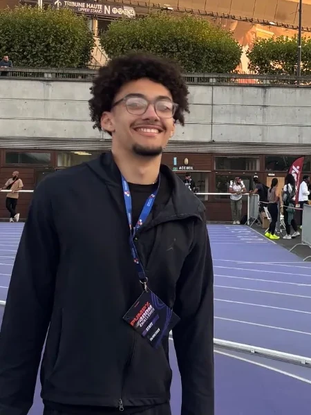
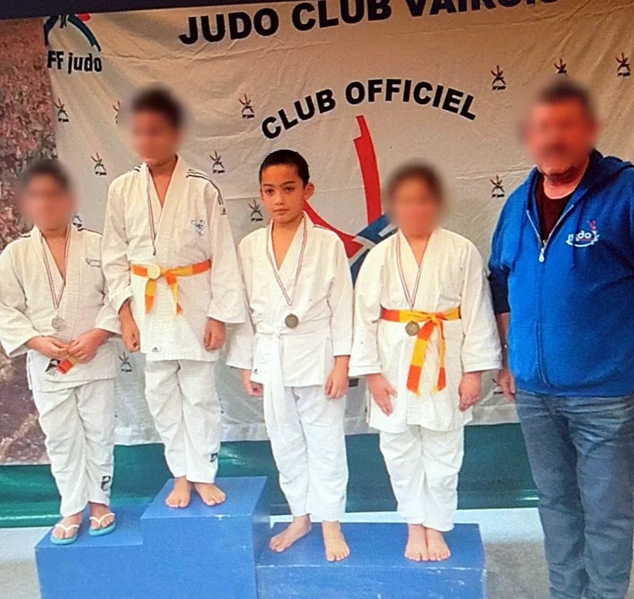
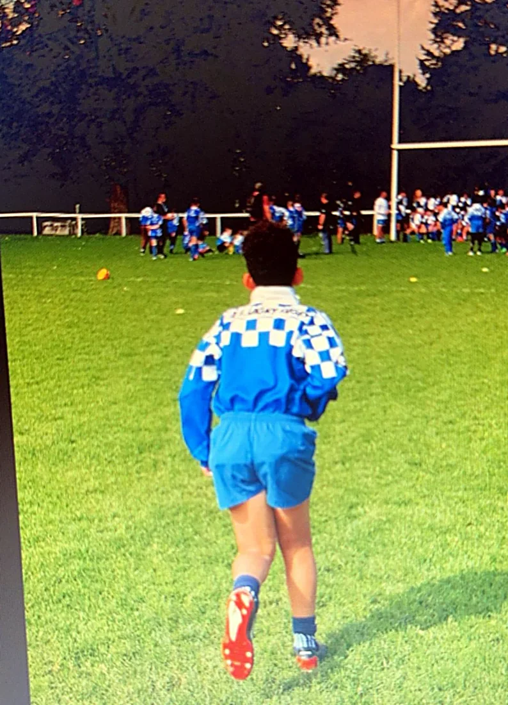
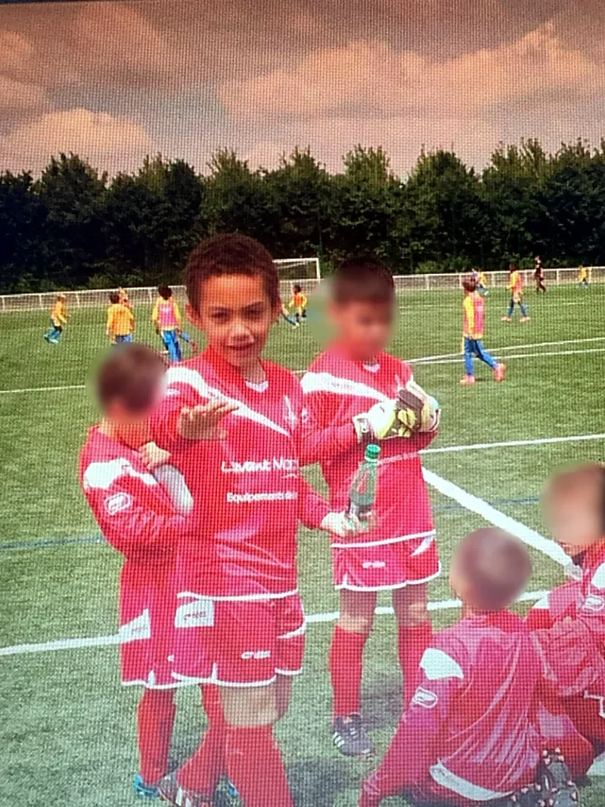
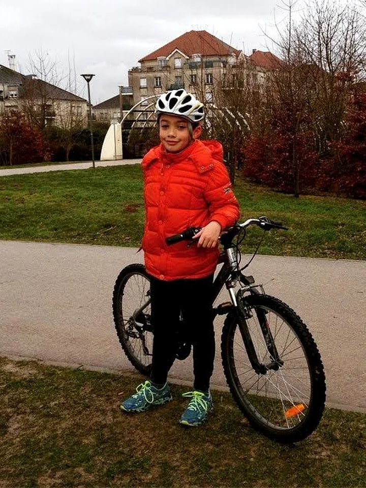
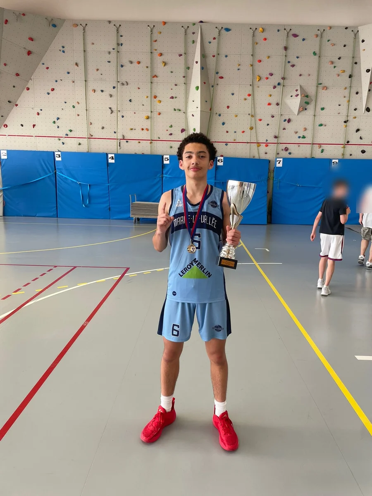
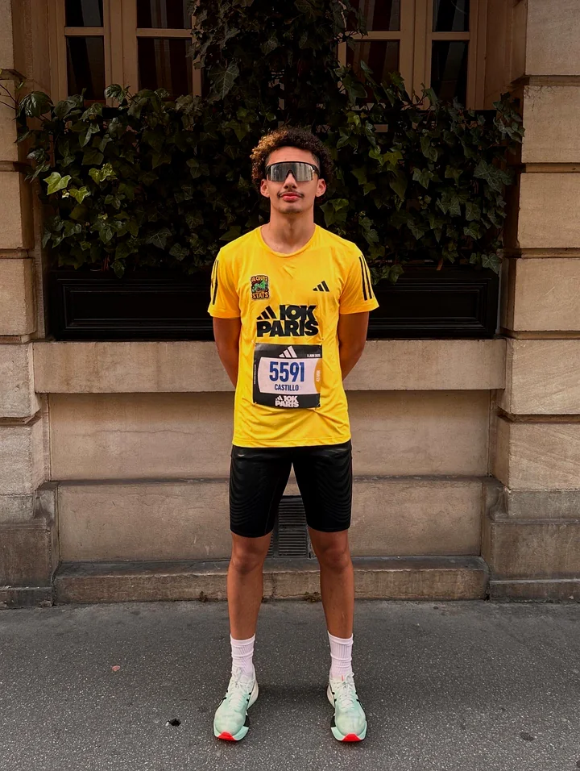
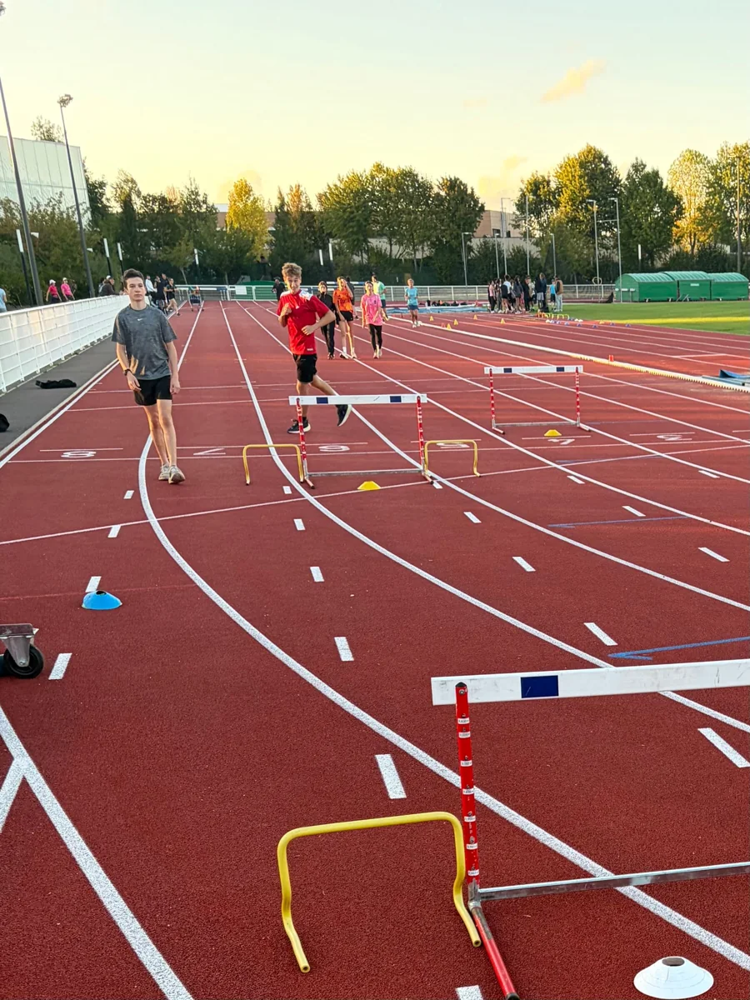
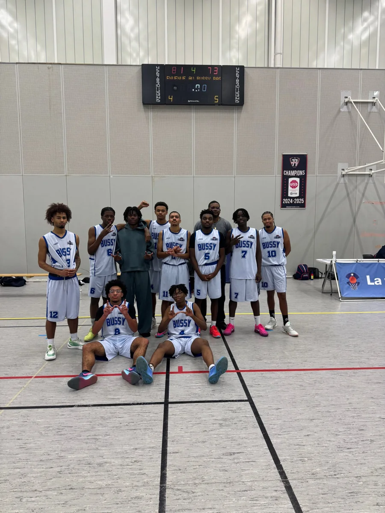

VICTOR CASTILLO

J'ai 19 ans. Étudiant en L2 STAPS, mention Entraînement sportif, à Paris Cité, je construis une approche qui associe les connaissances scientifiques, l'apprentissage universitaire et l'expérience pratique du terrain.
J'ai commencé la musculation seul, sans club, parce qu'un athlète doit toujours travailler son corps : c'est la machine qui fait performer, dans n'importe quel sport.
Ancien basketteur compétitif jusqu'au niveau national dans les catégories jeunes U15 et U18, avec des sélections départementales, je suis aujourd'hui athlète de demi-fond. J'ai pratiqué plus de 9 sports à différents niveaux : basket, athlétisme, natation, rugby, football, judo, tennis, vélo, musculation et course à pied. Trois d'entre eux au niveau régional, et des médailles départementales en judo.
J'entraîne depuis 2022, d'abord mon entourage et mes amis, puis ma famille, et aujourd'hui des sportifs rencontrés sur les réseaux. Le sport est au centre de ma vie depuis l'âge de 5-6 ans.
Pour moi, la pratique physique est essentielle pour la santé et le bien-être. Elle permet de voir ailleurs que dans le travail et les études, de prendre soin de soi et de se dépasser. Elle apporte aussi plein de valeurs utiles au quotidien, dans tous les domaines de la vie.
En parallèle, je crée du contenu sur les réseaux sociaux depuis 2024 : plus de 3 millions de vues cumulées, plus de 2 000 abonnés, et un partenariat avec une marque de nutrition sportive.
Ce site, je l'ai aussi créé moi-même, à 100 %. Si tu veux un site comme celui-ci, je peux t'apprendre à le faire ou le créer pour toi.
Mes sports en images
Judo, rugby, football, vélo, basket, athlétisme : le sport a toujours été là.






Les visages des autres personnes sont floutés pour respecter leur vie privée.
Expérience d'encadrement
Je participe aussi à l'encadrement de jeunes athlètes sur les disciplines de course, de saut et de lancer. Aujourd'hui, j'encadre toujours les plus jeunes en athlétisme, avec deux autres entraîneurs, sur un groupe d'une vingtaine d'athlètes.

Avant cela, j'ai été stagiaire pendant quatre mois au Bussy Basket Club, sur la saison 2025-2026, auprès du groupe U21 départemental. J'y ai encadré un groupe d'une dizaine de joueurs.

Tu veux un site comme celui-ci ?
Ce site, je l'ai créé 100 % moi-même. Apprends à le faire avec ma formation PDF, ou fais-le créer sur devis.
Prêt à progresser ?
Écris-moi, on construit ton plan ensemble.